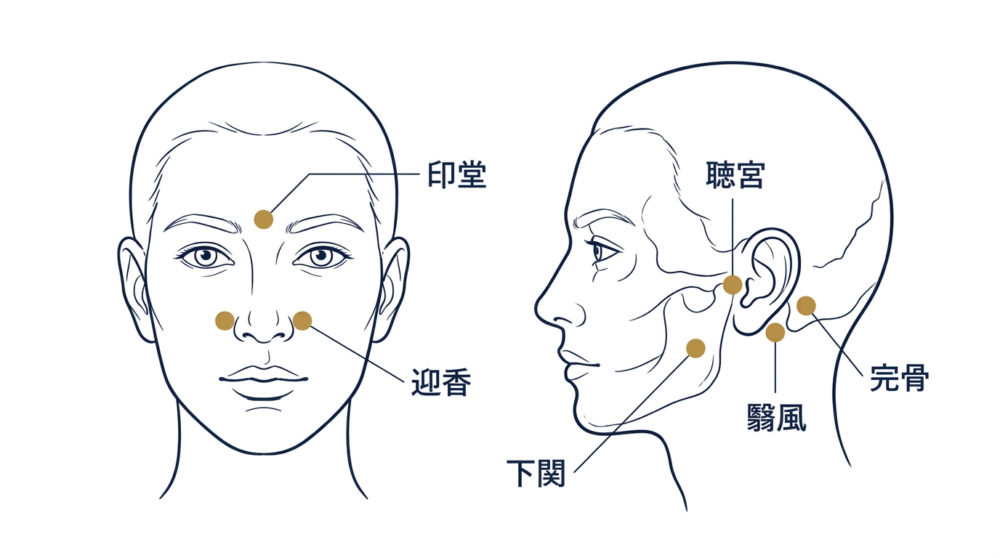

顎関節症の鍼灸
顎関節や噛む筋肉の痛み、開口障害、関節音が生じる症状です。歯科・口腔外科での評価と併用し、咬筋・外側翼突筋の深層筋鍼灸で負担を軽減します。

このようなお悩みはありませんか？
- ✓口を開け閉めすると顎関節が痛む、またはカクカクと音が鳴る
- ✓口を大きく開けにくく、硬い物や大きな物が食べづらい
- ✓顎のこわばりに加えて耳の奥の痛みや詰まり感、頭痛がある
- ✓寝ている間の歯ぎしり・食いしばりや猫背・デスクワークが多い
原因・メカニズム
顎関節症は、顎関節のクッションである関節円板のずれや、咬筋・外側翼突筋など咀嚼に関わる筋肉の過度な緊張によって起こります。噛み合わせだけでなく、睡眠中の歯ぎしり・食いしばり、頬杖、片側噛み、うつ伏せ寝、猫背や長時間のPC・スマホ作業、ストレスなど日常の癖や生活習慣が多要因で絡み合います。噛む筋肉の強い凝りは関連痛として耳の奥の痛みや首肩こり、頭痛を引き起こすこともあります。
当院の施術アプローチ
耳鼻咽喉のお悩みで代表的なツボとセルフケアの目安
実際の施術ではお一人おひとりの体質・症状に合わせて選穴しますが、耳鼻咽喉領域（アレルギー性鼻炎・耳鳴り・突発性難聴併用・顎関節症）の臨床でよく用いられる代表的な経穴（ツボ）は以下の通りです。

| ツボ名（経穴） | 位置の目安 | 主な狙い・役割 | セルフケアの注意点 |
|---|---|---|---|
| 聴宮（ちょうきゅう） | 耳の穴の前（耳珠）のすぐ前、開口時のくぼみ | 耳鳴り・耳閉感・顎関節周囲の血流改善 | 口を軽く開けてごく優しく（顎痛時は無理に開けない） |
| 翳風（えいふう） | 耳たぶの後ろ、乳様突起と下顎骨の間のくぼみ | 耳鳴り・めまい・難聴ケア・耳周囲循環改善 | 顔面神経近接のため強圧を避け温め・軽圧で |
| 迎香（げいこう） | 小鼻の左右の膨らみのすぐ脇（ほうれい線上） | 鼻づまり・アレルギー性鼻炎の鼻腔通気改善 | 皮膚が薄いためこすらず指先で軽く押す |
| 印堂（いんどう） | 左右の眉頭のちょうど中央 | 鼻づまり・副鼻腔の重だるさ・自律神経鎮静 | 指の腹でゆっくり5秒圧迫または優しくさする |
| 下関（げかん） | 耳の前、頬骨のアーチの下縁のくぼみ | 顎関節症・咬筋の過緊張・耳周囲の放散痛緩和 | 圧痛が出やすいため痛気持ちいい手前の弱圧で |
| 完骨（かんこつ） | 耳後ろの硬い骨（乳様突起）の後下方のくぼみ | めまい・耳鳴り・胸鎖乳突筋〜後頭部の緊張緩和 | めまい発作時は頭を動かさず座位で軽く押さえる |
査読論文が示す「耳鼻咽喉領域（アレルギー性鼻炎・耳鳴り・突発性難聴併用・顎関節症）×鍼灸」の科学的エビデンス
個別疾患ごとの大規模試験が限られる領域も含め、国際的な医学データベース（PubMed・Cochrane等）で報告されている耳鼻咽喉領域（アレルギー性鼻炎・耳鳴り・突発性難聴併用・顎関節症）領域の代表的な査読済み鍼灸研究をまとめました（いずれも標準治療との併用や研究上の限界を含めて正確に掲載しています）。
| 年・研究デザイン | 対象・規模 | 主な結果と臨床的意義 | 限界・出典 |
|---|---|---|---|
| 2013年 大規模多施設RCT | 季節性アレルギー性鼻炎 422名（ドイツ） | 7〜8週のRQLQ QOLがシャム比0.5点・薬単独比0.7点改善（P<0.001）、頓用薬使用も有意減少（P<0.001）。 | 1年目16週では群間差消失、臨床的意義は慎重評価。 Ann Intern Med (PMID: 23420231) |
| 2021年 メタ解析 | 耳鳴り 8 RCTs（n=504） | 生活支障度THI（MD -10.11, p<0.001）・TSI（MD -8.36, p<0.001）が有意改善。VASは有意差なし（p=0.06）。 | 組入れRCTの質・サンプル規模に限界あり。 Acupunct Med (PMID: 32772848) |
| 2026年 ネットワークメタ解析 | 突発性難聴 36研究（n=3,360・標準治療併用） | ステロイド等の標準治療への鍼灸併用で総有効率RR 1.19（p<0.0001）、3週間コースが推奨。 | エビデンス確実性は低く標準治療（早期ステロイド）併用が前提。 Complement Ther Med (PMID: 42918509) |
| 2023年 メタ解析 | 成人顎関節症 22 RCTs統合（n=471） | 標準治療併用で有効率RR 1.36・疼痛VAS MD -1.23と有意改善。 | GRADE確実性は低〜非常に低、さらなる高品質RCTが必要。 Medicine (PMID: 37746950) |
医療機関の受診を最優先すべきサイン（レッドフラッグ）
⚠ 専門医の受診・検査を最優先してください
突然の片耳の難聴・耳閉感（突発性難聴は発症48時間〜1週間以内の耳鼻科受診が最優先）、めまいに加え激しい頭痛・ろれつ困難・麻痺（脳卒中サイン）、拍動性耳鳴りや血性鼻汁、強い咽頭痛で唾液が飲めない・息苦しい場合は直ちに耳鼻咽喉科・救急を受診してください。
参考文献・出典
- 銀座そうぜん鍼灸院「顎関節症の公式解説ページ」
- 2013年 大規模多施設RCT（季節性アレルギー性鼻炎 422名（ドイツ））— Ann Intern Med (PMID: 23420231)
- 2021年 メタ解析（耳鳴り 8 RCTs（n=504））— Acupunct Med (PMID: 32772848)
- 2026年 ネットワークメタ解析（突発性難聴 36研究（n=3,360・標準治療併用））— Complement Ther Med (PMID: 42918509)
- 2023年 メタ解析（成人顎関節症 22 RCTs統合（n=471））— Medicine (PMID: 37746950)
よくある質問（FAQ）
Q. 耳の奥が痛いのに耳鼻科では異常なしと言われました。顎関節症の可能性はありますか？
はい、公式サイトでも解説している通り、顎関節が固まり咬筋や外側翼突筋が凝ると関連痛として耳の奥に痛みが出ることがあります。耳鼻科で耳の病気が除外されていれば、顎周囲の筋緊張ケアが有効です。
Q. 歯科のマウスピースを使いながら鍼灸に通えますか？
はい、併用される方は非常に多くいらっしゃいます。マウスピースで歯と関節を守りつつ、鍼灸で筋肉の深い凝りをほぐすことで相乗的な緩和が期待できます。
あわせて読まれる関連疾患（耳鼻咽喉のお悩み）
ある日突然片耳などが聞こえにくくなる感音難聴です。発症早期の耳鼻科ステロイド治療を最優先に、早期併用や回復期の耳鳴り・めまいをケアします。
実際には音がないのに耳の中で雑音が聞こえる状態です。耳の血流や自律神経・脳の過敏さを整えるケアで軽減を目指します。
末梢神経障害やむくみなど全身症状を呈するPOEMS症候群に対し、専門医治療を最優先に安定期の穏やかな補完ケアを行います。
明らかな病変がないのに舌の痛みや灼熱感が続く舌痛症に対し、自律神経と顔面周囲の巡りを整える鍼灸でサポートします。
発熱と首のリンパ節の腫れ・痛みを伴う菊池病に対し、専門医診断と急性期禁忌を守り、解熱後の回復期ケアを支援します。
リンパ管が袋状に膨らむ巨大リンパ管奇形に対し、専門医管理最優先・病変部刺鍼禁忌を守り安定期の全身ケアを支援します。